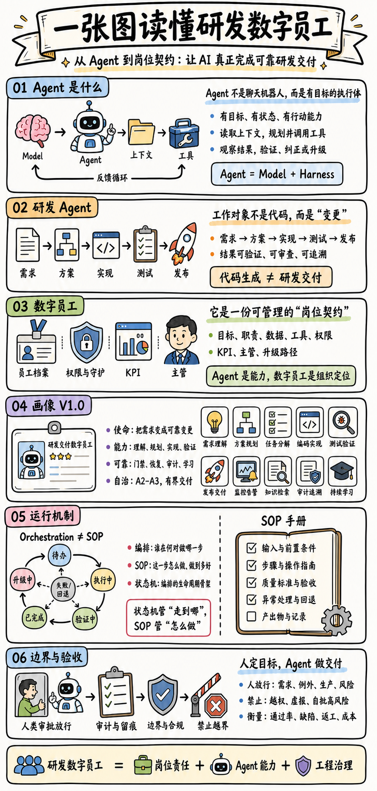

SOP
规定在一类常见情形下通常应该怎么做，稳定输入、步骤、产物和质量要求。
不是“会写代码的 Agent”，而是具有岗位契约、可靠交付链与工程治理的 Agent 工作系统。
整体概览

图片加载失败时仍可阅读本摘要：研发数字员工以带验收条件的工作单为基本单元，由岗位责任、Agent 能力与工程治理共同构成；V1.0 聚焦 A2–A3，并在人类 Gate 下形成可验证、可审查、可追溯的候选变更。
第一章
先厘清能力系统、市场覆盖与人机边界，再讨论一个 Agent 如何获得岗位责任。
内容页 01
Agent 是有目标、有状态、有行动能力，并能根据观察结果验证、纠正或升级的受约束执行体；研发 Agent 则把这种能力嵌入研发交付链。
研发 Agent：嵌入研发链路、以“有验收条件的变更”为工作对象的专业 Agent；代码生成只是其中一个节点。
Model 决定能力上限，Harness 决定可交付下限。
规定在一类常见情形下通常应该怎么做，稳定输入、步骤、产物和质量要求。
根据当前任务动态决定由谁、按什么顺序、调用什么工具，并在观察结果后继续、纠正或升级。
承载状态与跳转规则，是 Orchestration 的一种实现机制，而不是 Orchestration 本身。
内容页 02
市场上的研发 Agent 已从编码辅助延伸到任务执行、全流程协同和企业治理，但其公开能力不等于组织授权，也不等于无需人审。
在对话式编码环境中提供代码建议、代码解释、单元测试生成与缺陷修复建议。
边界：不能据此称其可以独立完成整个研发交付或替代评审。在隔离环境或虚拟机中围绕代码库执行有界任务：读取上下文、修改文件，并形成待审查的候选变更。
边界：不能据此称其可以自动合并、自动生产发布，或对业务目标与风险负责。将多个专长 Agent 嵌入研发生命周期，并连接 Issue、合并请求、提交和 CI/CD 上下文以支持异步协同。
边界：“贯穿生命周期”不等于每个阶段均无需人审，也不等于默认获得部署或生产操作权限。在企业 IAM 权限管理约束下提供研发辅助与代码审查，可检查安全、质量、IaC、部署风险和依赖项。
边界：不能据此称其已具备组织级多 Agent 编排、全流程自动交付或自动放行生产。官方能力核验日期：2026-08-05。产品名称链接到厂商官方文档；分类仅用于说明覆盖形态。
上下文检索 → 候选方案 → 标准实现 → 自动测试 → 证据整理 → 状态同步 → 可恢复重试
业务目标 → 优先级 → 模糊需求取舍 → 跨团队承诺 → 架构例外 → 生产风险接受 → 人员决策
内容页 03
Agent 是能力系统，研发数字员工是被组织赋予岗位契约、权限、考核和责任链的数字工作单元。
第二章
把岗位定义落到身份、行为、能力、自治等级、适用任务、考核方式与一天的交付轨迹。
内容页 04
定级依据是可承担的责任与所需的人类 Gate，而不是模型版本或拟人程度。
可观察行为：识别目标、验收、约束和缺口，不臆补高影响需求。
典型证据：需求规格、待确认项、决策记录。
可观察行为：定位相关代码、依赖、历史决策和影响面。
典型证据：上下文清单、影响分析。
可观察行为：形成可执行步骤、依赖、门禁和停止条件。
典型证据：计划、状态机、风险表。
可观察行为：按规范做最小、可维护的修改。
典型证据：差异、构建结果、静态检查。
可观察行为：设计并运行与风险匹配的验证，失败不虚报。
典型证据：测试结果、手工回放、未验证边界。
可观察行为：正确选择工具，遵循最小权限和审批。
典型证据：工具调用记录、权限记录。
可观察行为：向人和其他 Agent 交付结构化上下文。
典型证据：交接包、评审回应、状态更新。
可观察行为：识别安全、数据、合规、生产和组织风险。
典型证据：风险分级、升级 / 拒绝记录。
可观察行为：重试、回退、断点续作，不重复破坏现场。
典型证据：检查点、恢复日志、回滚方案。
可观察行为：用失败样本改进，只沉淀已验证、可复用经验。
典型证据：评测集、复盘、候选 Skill / 规则提案。
风险升高时，自治等级必须动态下降。V1.0 聚焦 A2–A3，A4 不是默认建设目标。
内容页 05
把“适合做什么”与“怎样证明做得好”放在一起：考核被接受的交付结果，不考核代码行数、对话次数或 Token 数量。
内容页 06
任务：修复一个有明确复现步骤、测试环境和验收条件的后端接口缺陷，并准备可评审的候选变更；不自动合并或发布生产。
以下八个状态的 SOP 与证据默认完整呈现；交互仅用于改变选中态和展示密度。
下一步用 10–20 个真实、低到中风险研发任务回放画像；只有本地证据能够预测成功与失败，才进入下一版。
本页用于内部概念对齐、试点设计和评价框架，不是人员替代、组织缩编、采购或生产授权依据。